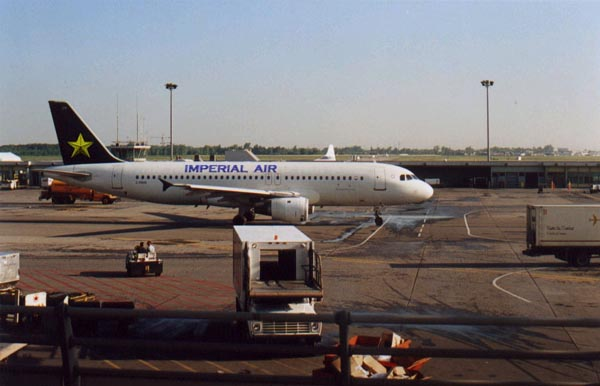
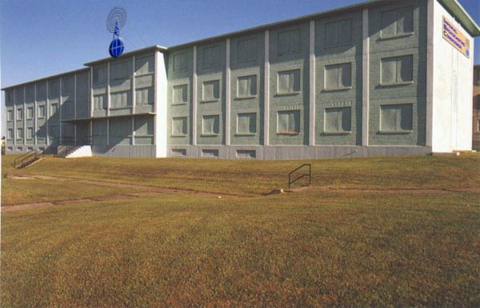

|
 Voici la première livraison de quelques images rapportées de notre périple en Terres Neuves. Tous pourront constater que la présence de l'Empire y est bien implantée.Note du GMDB:
|
|
|
|
J'ai ici une lettre de "GM" de Baie-Comeau, qui me demande: "À part de ça, de kessé d'être allé à Terre-Neuve ?". Cher GM, je suis allé à Terre-Neuve pour donner un atelier d'animation de deux jours. Ce fut ben l'fun. Voici une autre intéressante photographie que j'ai rapportée. Note du Ministre des non conformités au niveau des trains d'atterrissage: |
|
 AVIS À TOUSBien que reconnaissant les fautes reprochées (présence de détritus sur une photographie relative à l'Empire), j'invoque les circonstances atténuantes: la présence de ces éléments a priori indésirables avait pour but de mettre en relief le contraste entre la négligence barbare de l'organisme justement appelé "Arrivées & Départs Momentanés" (ADM) et la munificence des appareils impériaux. Deuxièmement, la photographie en question a bien été prise à l'aérodrôme clandestin de Dorval. Si le photographe a laissé plané quelque doute sur ce fait, il s'en excuse et vous envoit une autre photographie qui devrait apaiser ses détracteurs. PS: le train d'atterrissage de l'avion de l'Imperial Air Force est un protoype destiné à permettre l'aterrissage dans les swompes. Note de Hub: OK ça va être correct pour ce coup-ci, citoyen Grenier. Parce que vous avez toujours bien servi les intérêts de L'Empire, qui vous doit notamment son Hymne national, votre sentence est réduire à l'obligation symbolique de prendre trois grandes respirations d'affilée près d'un conteneur à déchets du quartier chinois. Allez en paix et ne pêchez plus (ni la perchaude, ni le crapet). Note de DNL: J'ajouterais au châtiment, cette variante amusante:
consommer le premier reste d'aliment trouvé près du conteneur
à déchêts. Si une queue de rat dépasse du-dit
reste, ne pas oublier de l'aspirer en émettant un sapement bien
modulé Ça fait poli. |